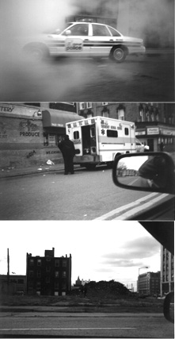

detroit: the virtual city

cognitive mapping
postmodern hyperspace "has finally succeeded in transcending the capacities of the individual human body to locate itself, to organize its immediate surroundings perceptually, and cognitively map its position in a mappable external world" (Jameson 1984a: p. 83)
deferral of political reality to touristic fetishism:
the fabulous ruins of detroit
detroit: motorless city
"genuine" responses from below:
the heidelberg project
submerge
official entity that mediate between reality of city and its virtualization:
detroit institute of the arts
URL: http://www.ele-mental.org/detroit/links.html